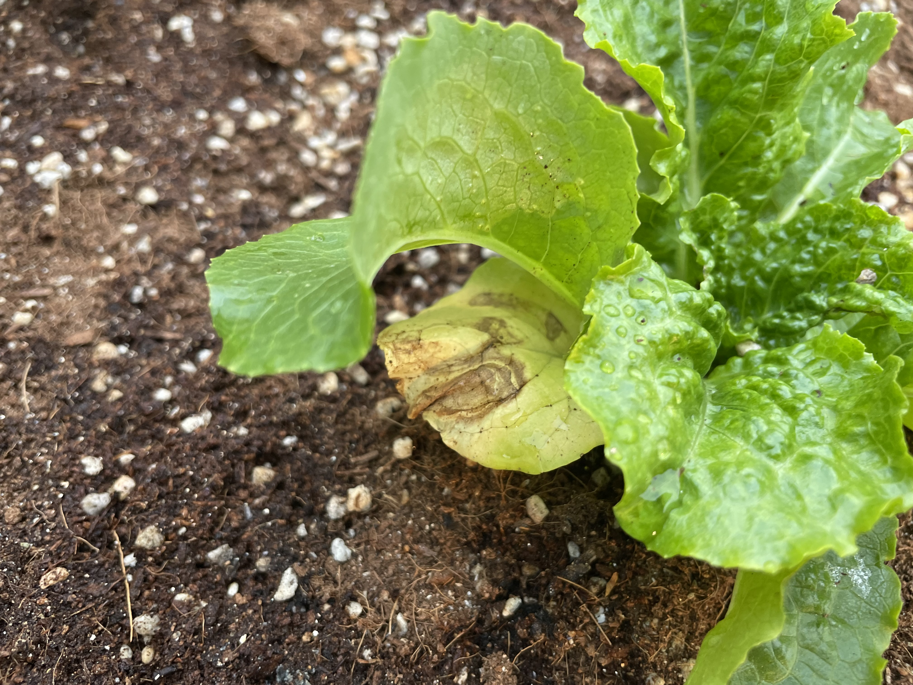
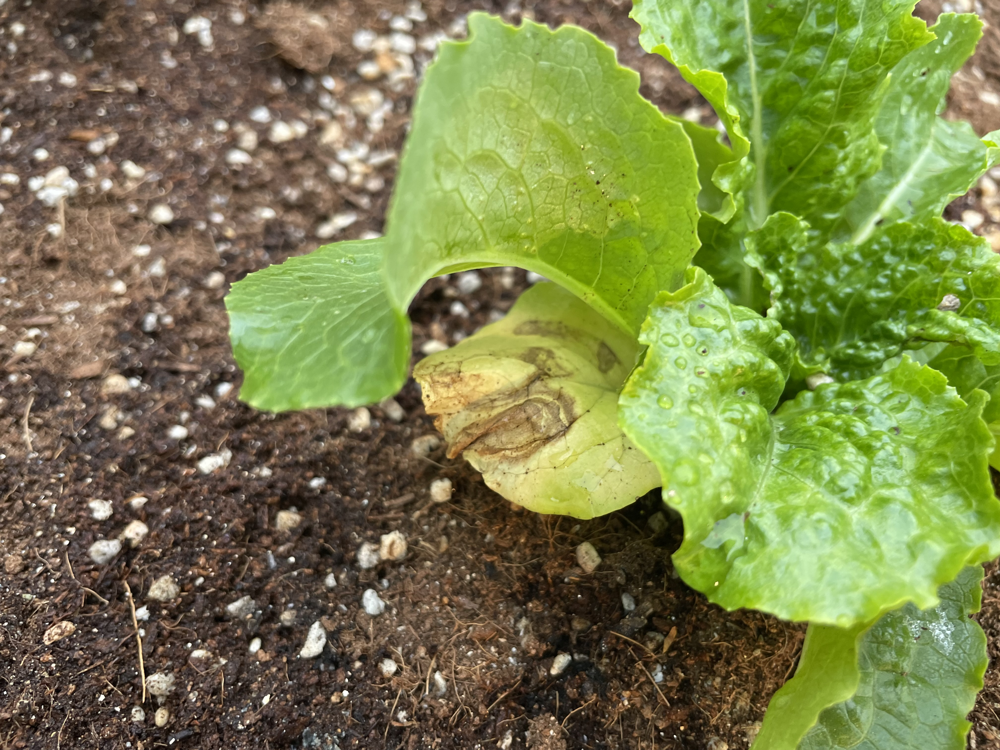

학교 화분에서 비비추 한포기를 뽑아서 폐가 앞 텃밭에 이식했다.
나는 오늘 학교에 위와같은 것을 심었다.

이로써 상추와 비비추의 위치는 뒤바뀌었다.

이름 모를 모종과 상추가 학교 안에 자리를 잘 잡은듯 하다.
혁명의 무대를 꾸몄다. 나는 들키지 않아야하지만 누군가는 나의 메시지를 보아야만 하니까.
화분에서 재떨이로, 재떨이에서 다시 상추 화분으로 돌아갔다. 학교에 추가적으로 6개의 상추를 더 심었다.
위치가 뒤바뀐 비비추와 상추는 정반대의 양상을 보인다.

좋은 소식과 나쁜 소식이 있다. 문헌관 나무에 심었던 적상추 두개가 뽑혀나간줄 알고 있었는데 다른 곳에 옮겨심겨진 것을 발견했다. 아무래도 적상추는 너무 눈에 띄는 것 같다.

나쁜 소식은 재떨이 화분에 심었던 상추가 전부 뽑혀나갔다는 것이다.
오늘은 청상추 6개를 가져왔는데, 재떨이에 4개를 심고 나머지는 문헌관 나무에 심었다.
문헌관 나무는 화분만큼이나 오염이 꼭 필요한 장소다. 이번 청상추는 반드시 이식에 성공해야한다.
화분에 심은 상추는 은밀하게 잘 자라고 있다.
사람들은 처음엔 꽁초를 버리는 것을 주저하는듯 하다가 다시 전처럼 재떨이로 사용하고 있다. 어떤 사람은 상추 하나의 생장점을 담배로 지졌다.
물을 충분히 줬음에도 상태가 영 좋지 못해서 걱정된다.

화분의 상추는 믿을 수 없을만큼 빠르게 자라고 있다. 나는 혁명의 무대에 있는 상추들이 또 다시 담뱃재 세례를 받거나 또 뽑혀나갈까봐 수시로 C동 8층 흡연장을 드나들고 있다.
언젠가 사람들이 내가 보내는 메시지를 알아봐줄 날이 올까? 이 상추는 이유가 있어서 심은 것이라는 걸.. 그리고 우리는 너무나도 위험한 권위주의 바이러스를 간과하고 있다는 것을.

비비추는 하루가 다르게 시들어가고 있다.

문헌관 나무에 있다가 옮겨 심어진 적상추다. 최근에 학교에서 화단에 퇴비를 뿌렸기 때문에 성장이 가장 빠르다.

무관심의 꽁초를 모으기 시작했다. 상추 재떨이를 깨끗하게 치우고나면 사람들이 잠시동안은 사용하지 않는다. 화분으로 바뀌지 않은 다른 재떨이에 모여 담배를 피우는 모습을 관찰할 수 있다.


누군가가 화단에 새 깃털을 꽂아두고 갔다. 흥미롭다. 아몬드 브리즈 팩은 그냥 버렸다. 연구실에 벌레가 꼬이는 것만은 피하고 싶기 때문이다.


추가로 상추 6개를 더 심었다. 대학교에 삽 들고 땅파고 다니면 누구 하나쯤은 뭐라고 할 줄 알았는데 아무도 신경쓰지 않아서 그냥 낮에 심었다.

 

꽁초 양이 많아졌다. 또 누군가가 상추에 담배를 지졌다. 다행히 생장점은 아니다.


잘 자라고 있던 상추들이 하루 사이에 으스러져 있다. 누군가 일부러 그랬다면 이유가 뭘까? 눈에 띄는 장소에 있는 상추들만 훼손되었다. 내가 하는 일이 과연 의미가 있는걸까?


비가 왔기 때문인지 혁명의 무대에 심은 청상추가 믿을 수 없을만큼 많이 자랐다. 생장점을 다친 상추만 잘 자라지 못하고 있다.
껌이 인상적이다.
눈에 띄지 않는 곳에 심었던 상추들은 무사하다.

대부분의 사람들은 여전히 상추에 관심이 없다. 재떨이로 이용하고 있다. 한편 화분에 관심을 가지고 이게 뭐냐고 묻는 사람들도 조금씩 생기고 있다.


오늘은 담배꽁초를 두번 수집했다.

담배꽁초를 맞아서 우그러진 잎사귀를 조금 제거했다. 훼손되었던 상추에 물을 열심히 줬더니 많이 회복되었다. 눈에 띄지 않게 뒤쪽에 심은 상추는 많이 자라서 넘치기까지 한다.
누가, 왜 상추를 훼손했을까. 모든 상추의 위치를 들킨건 아니라 정말 다행이다.


수확을 해도 될만큼 자랐다. 그런데.. 먹어도 될까?

메시지가 잘 전달되고 있는 것 같지 않아서 특단의 조치를 취했다. 부디 내가 징계나 눈총을 받지 않으면서 사람들이 나의 뜻을 알아줬으면 좋겠다.